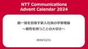
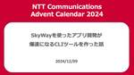
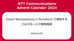
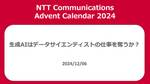
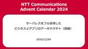
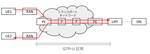

NTT Communications Engineers' Blog
https://engineers.ntt.com/
NTTコミュニケーションズ (NTT Com) のエンジニアによるブログです。
フィード

超一流を目指す新入社員の学習理論 ～個性を持つことの大切さ～ 3
3
NTT Communications Engineers' Blog
はじめに 開発部署へのOJTとしての挑戦 実際の開発業務でぶつかった壁 開発規模が大きい レビュアーにとって分かりやすいコードを書けない WebUIの開発において自分の想定と違う挙動になることがある 勉強方法の確立の難しさ 学習方法を確立する必要性 学習において大事だと感じたこと IT技術を体系的に（教科書的に）学ぶことは古い 効率的な学習方法 学習の高速道路 際立った個性 高速道路の高速化 超一流・一流になるために目指すべき人物像 NTTコミュニケーションズが与える学習の機会 おわりに 補足資料：ReactとRedux Reactとは JavaScriptのみの場合 Reactを導入した場合…
12時間前
自前のMedia over QUICの実装をIETF 121のハッカソンへ持ち込んだ話 17
NTT Communications Engineers' Blog
この記事は、 NTT Communications Advent Calendar 2024 10日目の記事です。 先日、自前のMedia over QUICの実装をIETF 121のハッカソンへ持ち込んで相互接続試験に参加してきました。 その結果、他の参加者の実装との相互接続に成功し、Working Groupのリストに名前を記載いただけました。 本記事では、Media over QUICの概要や動向を紹介し、ハッカソンでの体験について報告します。 はじめに Media over QUICとは？ 概要 プロトコルの構成 通信の参加者 何が嬉しいの？ メディアのフリーズを防げる 映像や音声以外…
2日前
構築から運用まで！脅威インテリジェンス業務を体験（インターンシップ体験記） 25
NTT Communications Engineers' Blog
こんにちは、NTTコミュニケーションズの現場受け入れ型インターンシップ2024に参加した大学2年生の大堀です。X（旧:Twitter）では@LimitedChan（限界ちゃん）というハンドルネームでサイバーセキュリティに関して活動しています。 普段は大学で情報系の学習をしながら、個人的に脅威インテリジェンスをはじめとしたサイバーセキュリティに対して興味があり、さまざまな学習に取り組んでいます。 2024年8月26日〜9月6日までの2週間、「脅威インテリジェンスを生成・活用するセキュリティエンジニア/アナリスト」としてNetwork Analytics for Security（通称:NA4Se…
2日前

SkyWayを使ったアプリ開発が爆速になるCLIツールを作った話 8
NTT Communications Engineers' Blog
この記事は、 NTT Communications Advent Calendar 2024 9日目の記事です。 この記事では、SkyWayを使ったアプリ開発が爆速になるCLIツールを作った話を紹介します。 CLIツールにどのような機能を実装したのか、機能を実装する際にどのようなことを考えたのかについて、詳しく説明します。 はじめに 注意事項 skyway-cliの機能 skyway-cli channel watch skyway-cli token serve skyway-cliを設計するときに考えたこと Unix哲学に則ること 設定値を柔軟に変えられること skyway-cliを実装す…
3日前

Cloud Workstations x Terraform で構築するフルマネージド開発環境 26
NTT Communications Engineers' Blog
この記事は、NTT Communications Advent Calendar 2024 7日目の記事です。 こんにちは！イノベーションセンターの外村です。 日頃は twada 塾 と呼ばれる社内向けソフトウェア開発研修を運営しています。最近チームを異動し、 ノーコード・ローコードで 時系列分析 AI を作ることができる Node-AI の開発にもジョインしました。 本記事ではフルマネージド開発環境である Google Cloud の Cloud Workstations についてその特徴と構築方法を述べたいと思います。 はじめに フルマネージド開発環境 Cloud Workstations…
5日前

生成AIはデータサイエンティストの仕事を奪うか？ 36
NTT Communications Engineers' Blog
こんにちは。NTTコミュニケーションズでエバンジェリストをやっている西塚です。今日が10年目の結婚記念日です。 この記事は、NTT Communications Advent Calendar 2024 6日目の記事です。 情報通信白書によると、デジタルデータの活用が企業経営に対して効果があると複数の先行研究で明らかにされています。 ビッグデータを活用している企業はそうでない企業に比べて、イノベーションの創出が統計学的に有意な差で多いと言われています。 私自身もNTTコミュニケーションズにおいて全社データ基盤を立ち上げて、社内システムからデータを収集し、 データサイエンティストと協力しながら、…
5日前

サーバレスをフル活用したビジネスｄアプリのアーキテクチャ（前編） 37
NTT Communications Engineers' Blog
この記事は、 NTT Communications Advent Calendar 2024 4日目の記事です。 はじめに この記事はコミュニケーション&アプリケーションサービス部でビジネスdアプリを開発している木村、立木、富田、西谷の共同執筆です。 今回は、NTTコミュニケーションズで提供するモバイルアプリ、「ビジネスdアプリ」のアーキテクチャに焦点を当て、サーバレスサービスをどのように活用しているかを2回にわたって紹介します。 この記事（前編）では、開発背景やサーバレスサービスを活用したアーキテクチャの概要を中心に解説します。後編では、具体的な運用やCI/CDの仕組みに焦点を当てる予定です…
8日前

SRv6 MUP を検証してみた 8
NTT Communications Engineers' Blog
こんにちは、情報セキュリティ部の原田とイノベーションセンターの竹中です。この記事では、モバイルネットワークのユーザプレーン技術である SRv6 MUP(Segment Routing over IPv6 Mobile User Plane)の解説と社内で行った検証についてご紹介いたします。 モバイルネットワークのアーキテクチャとSRv6 MUP 従来のモバイルネットワーク SRv6 Mobile User Plane 5Gネットワークへの SRv6 MUP の適用 MUP コントローラの設計 MUP コントローラの構成 PDU セッション確立時のシーケンス 検証 IS-IS の設定 IS-IS…
8日前

子ども向けロボット教室で懐中電灯で操作するロボットを作った話
NTT Communications Engineers' Blog
AIロボット部（社内サークル）では、子ども向けロボット教室を開催しました。 今年は、懐中電灯の光を利用して進行方向を指示するロボットを制作しました。 偏光板と光抵抗を使った分圧回路を活用し、簡単な電子工作の知識で実現可能な仕組みを採用しました。 ファミリーデーとロボット教室 ロボット教室の内容 方向指示のしくみ 準備に関して プロトタイプの作成 1. 手軽に入手できる部品で構成する 2. できるだけシンプルな仕組みにする 3. ロバスト性の確保 基板作成、調達 昨年の反省は活かされたのか？ 当日の様子 おわりに（+社外イベントへの出展のおしらせ） 但し書き こちらは、NTT Communica…
9日前
perf の Python インタプリタを利用して KVM Exit/Entry のレイテンシを分析する
NTT Communications Engineers' Blog
この記事は、 NTT Communications Advent Calendar 2024 2 日目の記事です。 perf の Python インタプリタを使って KVM Exit/Entry のレイテンシを計測してみます。 はじめに KVM の仕組み CPU トレースを取得する perf をビルドする Python コードを書く 独自スクリプトを用いて perf.data を集計する まとめ 参考文献 はじめに こんにちは。 SDPF クラウド・仮想サーバーチームの杉浦 (@Kumassy_) です。 普段は OpenStack の開発・運用をしており、最近は仮想マシンの性能解析やトラブル…
10日前
ストリーム処理を活用してLLMベース音声対話システムのレイテンシを短縮する
NTT Communications Engineers' Blog
この記事は、 NTT Communications Advent Calendar 2024 1日目の記事です。 こんにちは、イノベーションセンターの加藤です。普段はコンピュータビジョンの技術開発やAI/機械学習（ML: Machine Learning）システムの検証に取り組んでいます。一方で、兼務で生成AIチームに参加し、大規模言語モデル（LLM: Large Language Model）に関する技術の調査を行なっています。 音声アシスタントをLLMベースで作成する際、ユーザーの入力音声を一旦テキストに変換し、LLMに応答させた後、その応答文から読み上げ音声を生成するというカスケード方式…
10日前
プロダクトグロースのためのデータ活用
NTT Communications Engineers' Blog
データ駆動型の意思決定が重要視される現代のビジネス環境において、プロダクト開発におけるデータ活用は不可欠です。 この記事では、開発中の新サービス COTOHA Insight Detector（仮称。以下、CID）でのデータ活用を通じて得られた知見と、データ活用の重要性について紹介します。 はじめに なぜデータ活用が大切か プロジェクトのゴールとチームの課題 プロジェクトの実施内容 ゴール設定 ヒアリングシート CJM作成 データ取得、分析環境の準備 仮説作成 検証 分析の課題 プロジェクトの振り返りと今後 おわりに はじめに こんにちは、デジタル改革推進部データドリブンマネジメント推進部門（…
17日前
特殊詐欺のコミュニティで行われている活動について
NTT Communications Engineers' Blog
みなさんこんにちは、イノベーションセンターの益本(@masaomi346)です。Network Analytics for Security (以下、NA4Sec) プロジェクトのメンバーとして活動しています。この記事では注意喚起を兼ねて、特殊詐欺を例に犯罪者のコミュニティで行われている活動を紹介します。ぜひ最後まで読んでみてください。
1ヶ月前
ラスベガスでセキュリティカンファレンスをハシゴしてきた話
NTT Communications Engineers' Blog
こんにちは。NTT Comの市村、田口、村上です。2024年8月に米国ラスベガスで同時期に開催された3種類のセキュリティカンファレンスへ聴講者として参加しました。 この記事では連日参加した3種類のセキュリティカンファレンス及び、聴講した中で印象深かった講演の概要について紹介します。 目次 目次 8月のラスベガスを彩るセキュリティの祭典 BSides Las Vegas Black Hat USA DEF CON 複数の会議が同時開催されるメリットについて 講演内容 BSides Las Vegas: Devising and detecting spear phishing using dat…
1ヶ月前
IoT SAFEを試してみた
NTT Communications Engineers' Blog
はじめに こんにちは、5G&IoT部/IoTサービス部門の下地です。SIMのAppletを活用したサービスの企画・開発に取り組んでいます。 IoT (Internet of Things) デバイスの普及に伴い、セキュリティの重要性が高まっていますが、GSMA規格のIoT SAFE (IoT SIM Applet For Secure End-to-End Communication) は、この課題に対するソリューションとして注目されています。 今回はそのIoT SAFEとAWS IoT Coreを連携させてみます。 はじめに IoT SAFEの特徴 試してみた 構成概要 ATコマンド利用設定…
1ヶ月前
ローカル5G網と公衆モバイル網への接続を切り替え可能なSIMアプレットの開発
NTT Communications Engineers' Blog
本記事では、「ローカル5G網への接続と公衆モバイル網への接続を切り替え可能なSIMアプレット」について説明します。 SIMアプレットはSIMカード上に搭載するアプレットです。SIMアプレットとは何か、どのような機能を実装することで技術開発を実現したのかといったことをご紹介します。 目次 目次 はじめに 背景 SIMカード SIMアプレット 動作例 開発環境 SIMアプレットの活用事例 新たなSIMアプレットの開発 動機 開発技術の構成要素: プロファイル切替機能 開発技術の構成要素: エリア判定機能 各切り替え時のシーケンス 開発技術の検証 検証概要 検証結果 バグの修正 課題への対処 発信活…
2ヶ月前
MoQTを活用した双方向VTuberライブデモでアバターのパパになってみた（インターンシップ体験記）
NTT Communications Engineers' Blog
こんにちは、インターンシップ生の木戸です。普段大学院では、ヒトの認知科学に関する研究をしています。8/26-9/6までの2週間、『超低遅延ライブ配信技術を活用した、新規ライブ配信サービスを実現する技術の開発』というテーマの下、NTTコミュニケーションズの現場受け入れ型インターンシップに参加しました。この記事では、私がお世話になったプロジェクト／インターンシップで取り組んだ業務体験内容について紹介していきます。
2ヶ月前
フルリモート環境でのアジャイル開発って実際どうなの？ NeWork の取り組みを紹介
NTT Communications Engineers' Blog
この記事では、NeWork の開発チームがフルリモート環境でアジャイル開発するにあたり個人的に重要だと感じた部分を紹介します。 目次 目次 はじめに 背景 NeWork のチーム構成と動き方 コミュニケーションの工夫 オンラインの人を取り残さない各種ツールの利用 各種打合せ アイデア出し・情報共有・レトロスペクティブ 開発作業 話しやすいチームの文化づくり オープンな打合せ 話しかけやすく・呼び出しやすい環境 常に会話できることで雑談 データでみるコミュニケーション量 まとめ おわりに はじめに こんにちは、NeWork 開発チームの加藤です。私は普段、オンラインワークスペースサービス NeW…
2ヶ月前
ローコード・ノーコードに潜むリスクを攻撃ツールで確かめてみた（インターンシップ体験記）
NTT Communications Engineers' Blog
こんにちは、NTTドコモグループの現場受け入れ型インターンシップ2024に参加させていただきました、佐藤と鈴木です。 本記事では、現場受け入れ型インターンシップ「D1.攻撃者視点に立ち攻撃技術を開発するセキュリティエンジニア」での取り組み内容について紹介します。NTTドコモグループのセキュリティ業務、とりわけRedTeam PJに興味のある方への参考になれば幸いです。 目次 目次 RedTeam PJの紹介 参加に至った経緯 インターンシップ概要 ローコード・ノーコードとは 検証業務 Power Pwnの概要 PowerDump reconコマンド dumpコマンド 条件や制約の調査 dump…
2ヶ月前
セキュリティ・ミニキャンプ in 愛知 2024に講師として参加してきた話
NTT Communications Engineers' Blog
みなさんこんにちは、イノベーションセンターの益本(@masaomi346)です。 Network Analytics for Security (以下、NA4Sec) プロジェクトのメンバーとして活動しています。 この記事では、2024年9月14日に開催されたセキュリティ・ミニキャンプ in 愛知 2024で、講師として参加したことについて紹介します。 ぜひ最後まで読んでみてください。 NA4Secについて セキュリティ・キャンプについて 参加者から講師に 担当した講義について 講師をしてみて 学生の方へ 出張講演承ります NA4Secについて NA4Secは、「NTTはインターネットを安心・…
2ヶ月前
シンデレラのように魔法がとけないうちは本番環境にアクセスできるようにしてみた
NTT Communications Engineers' Blog
この記事では、できるだけアクセスを絞るべき本番環境に対して、かのシンデレラのように時間制限つきの承認性アクセスができるようにした事例を紹介します。 目次 目次 はじめに 背景 複数の環境 これまでの運用 課題 実現方法 実装 - Google Cloud IAM 設定スクリプト 設定 - GitHub Environments 実装 - GitHub Actions その他細かな工夫点 ゴミ掃除 Slack 連携 サービスアカウントキーの発行 運用を変えてみて おわりに はじめに こんにちは、NeWork 開発チームの藤野です。普段はオンラインワークスペースサービス NeWork のエンジニア…
3ヶ月前
BSides登壇のBサイド ～なんで、私が海外セキュリティカンファレンスに！？～
NTT Communications Engineers' Blog
こんにちは。イノベーションセンターの鮫嶋です。本記事では、今年で入社2年目の新人が、2024年8月に開催されたセキュリティカンファレンスBSides Las Vegas 2024で登壇するまでの道のりについてご紹介します。
3ヶ月前
GitHub Models を使って 20 種類以上の LLM の日本語性能を測定してみた
NTT Communications Engineers' Blog
本記事では、今年8月にパブリックベータ版として GitHub に搭載された新機能 GitHub Models について、概要や利用法を簡単にご説明します。さらに、実際に GitHub Models を活用して、多数の LLM の日本語性能を横断的に測定していく例を紹介していきます。 目次 目次 はじめに 三行で GitHub Models を説明すると... GitHub Models の使い方 Waitlist への登録 モデル一覧 ブラウザ上で試す API経由で試す GitHub Models を利用する上での注意点 API レート制限の制約が強い Azure AI Content Saf…
3ヶ月前
NetBox のオンプレから Amazon ECS 移植を CDK で実現する
NTT Communications Engineers' Blog
チームの管理情報を溜めていたオンプレ基盤で動く NetBox を Amazon Elastic Container Service へ AWS Cloud Development Kit を用いて移植しました。 今まで NetBox をオンプレで動かしていた際には以下のような運用の難しさがありました。 DB も Docker コンテナによって管理されており、冗長化もなかったため DB コンテナが落ちてしまうとサービス提供できなくなる可能性があった Docker Compose で動かしているので、サービスの作り直しを実施するとそれまでのログが削除される そもそも NetBox を動かしている場…
4ヶ月前
進化的モデルマージで日本語がわかるソースコード生成LLMを作ってみる
NTT Communications Engineers' Blog
こんにちは、イノベーションセンターの加藤です。普段はコンピュータビジョンの技術開発やAI/機械学習（ML: Machine Learning）システムの検証に取り組んでいます。一方で、兼務で生成AIチームに参加し、大規模言語モデル（LLM: Large Language Model）に関する技術の調査を行なっています。 この記事では、日本語のコード生成のデータセットが無い条件下で、進化的モデルマージを活用することで日本語とソースコード生成に特化した大規模言語モデル(LLM)を合成した試みについて紹介します。 目次 目次 モデルマージとは 進化的モデルマージとは 利用したモデル 日本語LLM コ…
4ヶ月前
Databricks AI/BI Genieを使って自然言語検索でデータ分析をしてみた
NTT Communications Engineers' Blog
はじめに こんにちは、イノベーションセンターの真崎です。 6月にDatabricksの年次カンファレンス Data+AI Summit 2024 が開催され、AI/BI GenieというDatabricks上のデータを自然言語で検索・分析・可視化できる機能が発表されました。 本記事では、AI/BI Genieについて機能の概要、及び実際に使用した流れを解説します。 Databricksとは Databricksはデータウェアハウスとデータレイクの両方の強みを兼ね備えたデータとAIのためのオープンな統合プラットフォーム「データ・インテリジェンス・プラットフォーム」を提供しています。 AI/BI …
4ヶ月前
DeltaLake Universal Formatを使ったクロスプラットフォーム分析
NTT Communications Engineers' Blog
本記事では6月に開催されたDATA+AI Summit 2024でGeneral Availabilityが発表されたDatabricksのDeltaLake Universal Formatの機能を使ってクロスプラットフォームでの分析を実現する方法について紹介します。 DeltaLake Universal FormatはDeltaLakeに保存されたデータをApache Icebergなどの異なるフォーマットで読み出すことができるようにする機能です。本記事では実際にDatabricks上でDeltaLake Universal Formatの機能を有効にしたテーブルを作成し、Amazon …
4ヶ月前
Hack Fes. 2024に登壇してきた話
NTT Communications Engineers' Blog
みなさんこんにちは、イノベーションセンターの益本(@masaomi346)です。 Network Analytics for Security (以下、NA4Sec) プロジェクトのメンバーとして、脅威インテリジェンス(潜在的な脅威について収集・分析したデータ)の分析をしています。 この記事では、2024年7月20日に開催されたセキュリティカンファレンスHack Fes. 2024にて、登壇したきたことについて紹介します。 ぜひ最後まで読んでみてください。 Hack Fes.について Hack Fes.は、日本ハッカー協会が主催するセキュリティカンファレンスです。 専門知識やスキルを学ぶだけで…
4ヶ月前
HPE Discover 2024 参加報告
NTT Communications Engineers' Blog
Hewlett Packard Enterprise (HPE) が主催する最大のテクノロジーカンファレンス、HPE Discover 2024 が 2024年6月17日から20日に米国ラスベガスで開催されました。 この記事では HPE Discover 2024 に聴講参加して得られた知見について、主にサーバー関係のものを中心に共有します。 はじめに HPE Discover 2024 とは Keynote: Intelligence has no limits 新サーバーの発表 AI 向けサーバー サービスプロバイダー向けのサーバー 興味深かったセッション The future of li…
5ヶ月前
スクラムチームをLeSSっぽく2分割したらリリース頻度が2倍になった話
NTT Communications Engineers' Blog
時系列データ分析ツール「Node-AI」を開発するスクラムチームは、LeSS（Large-Scale Scrum）を参考にした開発プロセスを採用しました。 本記事では、その背景や数か月試した結果について紹介します！ 目次 目次 はじめに Node-AIについて フロントエンドのリプレイスを終えて チーム分割に対する勘所 コンポーネントチームとフィーチャーチーム 実際の運用 チームへの愛着 2チーム体制を続けてきて おわりに はじめに はじめまして、イノベーションセンター Node-AIチームの中野、半澤です。 （中野）Node-AIチームでは2024年4月からスクラムマスターとして活動しており…
5ヶ月前